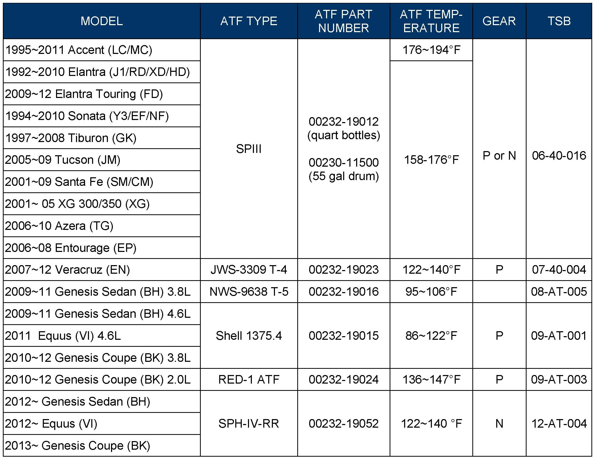
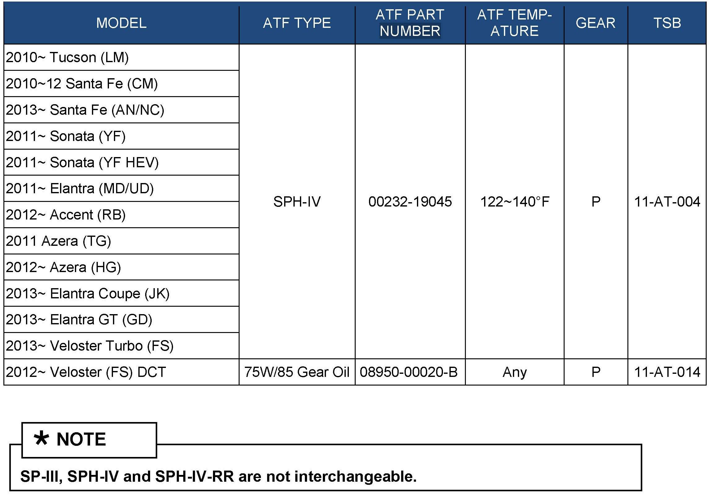

A/T - Hyundai Specified ATF And Additive Usage
GROUPAUTOMATIC TRANSAXLE
DATE
DECEMBER 2012
NUMBER
12-AT-006-2
MODEL
ALL
SUBJECT:
HYUNDAI SPECIFIED ATF AND ADDITIVE USAGE
This TSB supersedes TSB 12-AT-006-1 to add 2013 models.
Description:
Hyundai approves the use of only the ATF specified in the vehicle's owner's manual.
Use of other ATF may result in improper shift quality or other drivability conditions.
Hyundai does not approve of the use of any aftermarket ATF additives.
Applicable Vehicles:
All


HYUNDAI SPECIFIED ATF: